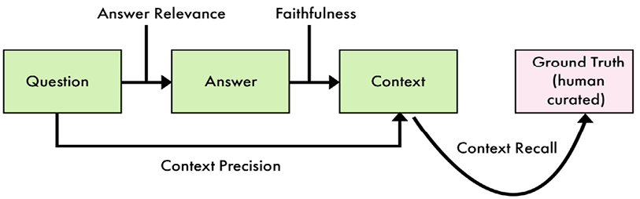
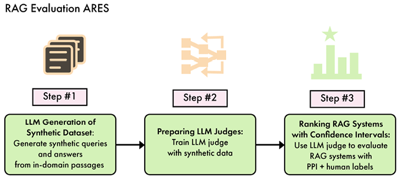

章節導讀Introduction
LLM 評估是評估 LLM 模型效能與能力的關鍵流程。它可以採取多種形式，例如選擇題問答、開放式指令，以及真實使用者的回饋。目前尚無統一的模型效能衡量方法，但有許多可依特定用例調整的模式與做法。
English original
通用評估最為流行，例如大規模多任務語言理解（Massive Multi-Task Language Understanding, MMLU）或 LMSYS Chatbot Arena 等基準測試；不過，領域特定與任務特定的模型更適合採用範圍較窄的方法。當處理的是整個 LLM 系統（而非單一模型）時尤其如此，這類系統通常以檢索增強生成（retrieval-augmented generation, RAG）流程為核心。在這些情境中，我們需要擴展評估框架以涵蓋整個系統，包括檢索器與後處理器等新模組。
English original
本章將涵蓋以下主題：
English original
- 模型評估
- RAG 評估
- 評估 TwinLlama-3.1-8B
讀完本章後，你將了解最流行的 LLM 評估方法，以及如何使用不同技術評估模型與 RAG 系統。
English original
模型評估Model evaluation
在模型評估中，目標是在不涉及提示工程、RAG 流程等外部因素的情況下，評估單一模型的能力。
English original
這類評估之所以重要，有幾個原因，例如挑選最相關的 LLM，或確認微調流程是否真的改善了模型。本節將比較 ML 與 LLM 評估，以理解這兩個領域的主要差異；接著探討通用、領域特定與任務特定模型的基準測試。
English original
ML 與 LLM 評估比較Comparing ML and LLM evaluation
ML 評估的核心，是評估為預測、分類與迴歸等任務設計的模型效能。LLM 評估通常著重於模型理解與生成語言的能力；相較之下，ML 評估更關心模型能多準確、多有效率地處理結構化資料，以產生特定結果。
English original
這項差異源於這些模型所處理任務的本質。ML 模型一般針對定義狹窄的問題設計，例如預測股價或偵測異常值，這類問題通常涉及數值或類別資料，使評估流程較為直接。另一方面，LLM 的任務是解讀與生成語言，這為評估流程增添了一層主觀性。LLM 評估不能只依賴數值基準，而需要更細緻的方法，且經常納入質性評估，檢視模型能否以自然語言產生連貫、相關且符合情境的正確回覆。
English original
具體而言，這些模型的運作方式有三項關鍵差異，會影響評估流程：
English original
- 數值指標：評估 ML 模型通常涉及衡量客觀效能指標，例如準確率、精確率、召回率或均方誤差，取決於任務類型。LLM 則較不明確，因為它們能處理多項任務（因而需要多種評估），且很少能依賴相同的數值指標。
- 特徵工程：在傳統 ML 中，流程的關鍵部分包括在訓練模型前手動挑選與轉換相關資料特徵。評估特徵工程是否成功，往往成為更廣泛模型評估的一部分。然而，LLM 設計為直接處理原始文字資料，降低了手動特徵工程的需求。
- 可解釋性：對於 ML 模型，較容易解釋模型為何做出某些預測或分類，而這種可解釋性可能成為其評估的核心部分。LLM 無法做到這種直接解釋；不過，在生成過程中要求模型提供說明，可以讓人了解其決策過程。
下一節將更細緻地探討不同類型的 LLM。雖然通用模型的評估與 ML 評估相當脫節，但任務特定 LLM 則與傳統 ML 較為接近。
English original
通用 LLM 評估General-purpose LLM evaluations
通用評估是指專門用於基礎模型與通用微調模型的指標。它們涵蓋與知識及實用性相關的廣泛能力，而不聚焦於特定任務或領域。這讓開發者能概覽這些能力、與競爭者比較，並找出優勢與弱點。根據這些結果，可以調整資料集與超參數，甚至修改架構。
English original
我們大致可將通用評估分為三個階段：預訓練期間、預訓練之後，以及微調之後。
English original
在預訓練期間，我們密切監控模型的學習情況，如第 5 章末尾所示。最直接的指標屬於低階指標，對應模型的訓練方式：
English original
- 訓練損失：基於交叉熵損失，衡量模型預測的機率分布與下一個 token 的真實分布之間的差異。
- 驗證損失：計算與訓練損失相同的損失，但在保留的驗證集上進行，以評估泛化能力。
- 困惑度：交叉熵損失的指數值，代表模型對資料感到多「驚訝」（越低越好）。
- 梯度範數：監控訓練期間梯度的幅度，以偵測潛在的不穩定或梯度消失／爆炸。
在這個階段也可以納入 HellaSwag（常識推理）等基準測試，但有過度擬合這些評估的風險。
English original
預訓練之後，通常會使用一組評估來評測基礎模型。這組評估可包含內部與公開基準。以下是常見公開預訓練評估的非詳盡清單：
English original
- MMLU（知識）：以橫跨 57 個科目、從初等至專業程度的選擇題測試模型。
- HellaSwag（推理）：要求模型從多個選項中，為特定情境選出最合理的結局。
- ARC-C（推理）：以需要因果推理的小學程度科學選擇題評估模型。
- Winogrande（推理）：透過精心設計的句子中的代名詞消解，評估常識推理。
- PIQA（推理）：透過關於日常物理互動的問題，衡量物理常識理解。
許多這類資料集也用於評估通用微調模型。此時，我們關注基礎模型與微調模型在特定分數上的差異。例如，不良的微調可能降低模型由 MMLU 衡量的知識；相反地，良好的微調可能灌輸更多知識並提高 MMLU 分數。
English original
這也有助於找出任何資料汙染問題，也就是模型可能在過於接近測試集的資料上進行微調。例如，基礎模型的 MMLU 分數在微調階段提高 10 分並不太可能；這表示指令資料可能受到汙染。
English original
除了這些預訓練評估之外，微調模型也有專屬的基準測試。這裡所稱的「微調模型」，是指以監督式微調（SFT）與偏好對齊訓練過的模型。這些基準測試針對與微調模型理解及回答問題能力相關的能力，特別是測試指令遵循、多輪對話與代理式（agentic）技能：
English original
- IFEval（指令遵循）：評估模型遵循帶有特定限制之指令的能力，例如回答中不得出現任何逗號。
- Chatbot Arena（對話）：由人類針對指令投票選出最佳答案的框架，以頭對頭對話比較兩個模型。
- AlpacaEval（指令遵循）：針對微調模型的自動評估，與 Chatbot Arena 高度相關。
- MT-Bench（對話）：以多輪對話評估模型，測試其維持上下文與提供連貫回覆的能力。
- GAIA（代理式）：以多步驟方式測試工具使用、網頁瀏覽等廣泛能力。
理解這些評估如何設計與使用，對於為你的應用挑選最佳 LLM 很重要。例如，如果你想微調模型，你會希望取得特定規模下知識與推理能力最佳的基礎模型。這讓你能比較不同 LLM 的能力，並挑選能為微調提供最強基礎的模型。
English original
即使你不打算微調模型，Chatbot Arena 或 IFEval 等基準測試也是比較不同 instruct 模型的好方法。例如，若你要建立聊天機器人，你會希望具備出色的對話能力；但若最終目標是從非結構化文件中擷取資訊，則不需要這種能力。此時，優秀的指令遵循能力更能幫助你理解並執行任務。
English original
這些基準測試雖然流行且有用，但也有固有缺陷。例如，公開基準可能被「鑽漏洞」，作法包括在測試資料或與基準資料集極為相似的樣本上訓練模型。即使是人類評估也不完美，且常偏向冗長、自信的答案，尤其是格式精美（例如使用 Markdown）的答案。另一方面，私有測試集不像公開測試集那樣受到嚴格檢視，可能有自身的問題與偏誤。
English original
這意味著基準測試並非唯一的真相來源，而應作為訊號使用。當多項評估提供類似的答案時，你才可以提高對模型真實能力的信心。
English original
領域特定 LLM 評估Domain-specific LLM evaluations
領域特定 LLM 的範疇與通用模型不同。這有助於比前述基準測試更深入、更細緻地針對特定能力。
English original
在此類別中，基準測試的選擇完全取決於所在領域。對於語言特定模型或程式碼模型等常見應用，建議搜尋相關評估，甚至評估套件。這些套件涵蓋不同基準測試，並設計為可重現。它們針對領域的不同面向，通常能更準確地捕捉領域效能。
English original
為說明這點，以下列出 Hugging Face Hub 上設有排行榜的領域特定評估：
English original
- Open Medical-LLM Leaderboard：評估 LLM 在醫療問答任務的效能。它彙整 9 項指標，包含來自美國醫師執照考試（MedQA）的 1,273 題、來自 PubMed 文章的 500 題（PubMedQA）、來自印度醫學入學考試的 4,183 題（MedMCQA），以及來自 MMLU 六個子類別（臨床知識、醫學遺傳學、解剖學、專業醫學、大學生物學與大學醫學）的 1,089 題。
- BigCodeBench Leaderboard：評估程式碼 LLM 的效能，包含兩大類別：BigCodeBench-Complete 用於基於結構化 docstring 的程式碼補全，以及 BigCodeBench-Instruct 用於依自然語言指令生成程式碼。模型依貪婪解碼下的 Pass@1 分數排名，Complete 變體另提供 Elo 評分。它涵蓋廣泛的程式設計情境，測試 LLM 的組合推理與指令遵循能力。
- Hallucinations Leaderboard：評估 LLM 在橫跨 5 個類別的 16 項多樣任務中產生虛假或無依據資訊的傾向。這些類別包括問答（使用 NQ Open、TruthfulQA 與 SQuADv2 等資料集）、閱讀理解（使用 TriviaQA 與 RACE）、摘要（使用 HaluEval Summ、XSum 與 CNN/DM）、對話（使用 HaluEval Dial 與 FaithDial），以及事實查核（使用 MemoTrap、SelfCheckGPT、FEVER 與 TrueFalse）。此排行榜也使用 IFEval 評估指令遵循能力。
- Enterprise Scenarios Leaderboard：評估 LLM 在六個真實企業用例上的效能，涵蓋與商業應用相關的多樣任務。基準包括 FinanceBench（100 道附檢索脈絡的財務問題）、Legal Confidentiality（100 道來自 LegalBench 的法律推理提示）、Writing Prompts（創意寫作評估）、Customer Support Dialogue（客服互動中的相關性）、Toxic Prompts（有害內容生成的安全評估），以及 Enterprise PII（敏感資訊保護的商業安全）。部分測試集為閉源，以防止排行榜被鑽漏洞。評估聚焦於答案準確性、法律推理、創意寫作、情境相關性與安全措施等特定能力，全面評估 LLM 對企業環境的適用性。
排行榜可能依其領域採取不同方法。例如，BigCodeBench 與其他排行榜顯著不同，因為它只依賴兩項足以捕捉整個領域的指標。另一方面，Hallucinations Leaderboard 彙整 16 項指標，包括許多通用評估。這顯示除了自訂基準之外，重複使用通用基準也能補足你自己的評估套件。
English original
特別是語言特定 LLM，常重複使用通用基準的翻譯版本，並以母語的原創評估補足。雖然部分基準使用機器翻譯，但最好依賴人工翻譯的評估以提升品質。我們選出以下三個任務特定排行榜及其評估套件，供你參考如何建立自己的評估：
English original
- OpenKo-LLM Leaderboard：以 9 項指標評估韓語 LLM 的效能。這些指標結合翻譯為韓文的通用基準（GPQA、Winogrande、GSM8K、EQ-Bench 與 IFEval）與自訂評估（Knowledge、Social Value、Harmlessness 與 Helpfulness）。
- Open Portuguese LLM Leaderboard：以 9 項多樣基準評估葡萄牙語 LLM 的效能。這些基準包括教育評量（ENEM 的 1,430 題，以及大學入學考試 BLUEX 的 724 題）、專業考試（OAB Exams 超過 2,000 題）、語言理解任務（ASSIN2 RTE 與 STS、FAQUAD NLI），以及社群媒體內容分析（HateBR 的 7,000 則 Instagram 留言、PT Hate Speech 的 5,668 則推文，以及 tweetSentBR）。
- Open Arabic LLM Leaderboard：以一套全面基準評估阿拉伯語 LLM 的效能，包含原生阿拉伯語任務與翻譯資料集。此排行榜有兩項原生阿拉伯語基準：AlGhafa 與 Arabic-Culture-Value-Alignment。此外，它納入 12 項翻譯基準，涵蓋 MMLU、ARC-Challenge、HellaSwag 與 PIQA 等多個領域。
通用與領域特定評估的設計都遵循三項主要原則。第一，它們應具備複雜度，足以區分模型輸出的好壞。第二，它們應具多樣性，涵蓋盡可能多的主題與情境；當單一基準不足時，額外基準可組成更強大的套件。第三，它們應實用且易於執行，這與評估函式庫更為相關，而不同函式庫的使用複雜度各異。我們推薦 Eleuther AI 的 lm-evaluation-harness（github.com/EleutherAI/lm-evaluation-harness）與 Hugging Face 的 lighteval（github.com/huggingface/lighteval）來執行基準測試。
English original
任務特定 LLM 評估Task-specific LLM evaluations
通用與領域特定評估能指出強大的基礎或 instruct 模型，但無法說明這些模型在特定任務上的表現。這需要專門為此設計、衡量下游效能的基準測試。
English original
由於焦點狹窄，任務特定 LLM 很少能依賴既有評估資料集。這可能是有利的，因為其輸出通常更結構化，也更容易以傳統 ML 指標評估。例如，摘要任務可利用以召回為導向的摘要評估（Recall-Oriented Understudy for Gisting Evaluation, ROUGE）指標，透過 n-gram 衡量生成文字與參考文字之間的重疊程度。
English original
同樣地，分類任務也能受益，並使用以下經典指標等：
English original
- 準確率：正確預測的實例占總實例的比例。這對於具有類別輸出的任務，或正確與錯誤答案有明確區別的任務特別有用，例如命名實體辨識（NER）。
- 精確率：真陽性預測占模型所有陽性預測的比例。
- 召回率：真陽性預測占所有實際陽性實例的比例。
- F1 分數：精確率與召回率的調和平均，用於平衡兩項指標。這些指標在分類或實體擷取等任務中特別有用。
當任務無法直接對應到傳統 ML 任務時，可以建立自訂基準。此基準可借鏡通用與領域特定評估資料集。一種常見且成功的模式，是使用選擇題問答。在此框架中，指令由一個問題與數個選項組成。以下範例取自 MMLU 資料集（抽象代數）：
English original
| Instruction／指令 | Output／輸出 |
|---|---|
| Instruction Find the degree for the given field extension Q(sqrt(2), sqrt(3)) over Q. 求給定體擴張 Q(sqrt(2), sqrt(3)) 在 Q 上的次數。 A. 0 B. 4 C. 2 D. 6 |
Output B |
以此方案評估模型主要有兩種方式：文字生成與對數機率評估。
English original
第一種方法是讓模型生成文字回覆，再與預先定義的答案選項比對。例如，模型生成一個字母（A、B、C 或 D）作為答案，然後檢查是否與正確答案相符。此方法測試模型能否以類似實際應用中的格式，產生連貫且正確的回覆。另一方面，使用機率的評估則檢視模型對不同答案選項的預測機率，而不要求生成文字。對於 MMLU，lm-evaluation-harness 會比較每個答案選項完整文字的機率。這種方法能更細緻地評估模型的理解程度，因為即使模型未必會生成完全正確的答案文字，也能捕捉它對不同選項的相對信心。
English original
為求簡單，我們推薦模擬人類應試的文字生成版評估。它較容易實作，且通常更具區辨力，因為低品質模型在基於機率的評估中往往會表現過好。你可以調整這項技術，用它測驗模型對特定任務的理解，甚至擴展到特定領域。
English original
反之，若任務過於開放，傳統 ML 指標與選擇題問答可能不適用。此時，可使用第 5 章介紹的 LLM-as-a-judge 技術來評估答案品質。若你有標準答案，將其作為額外脈絡提供，可提升評估的準確性。否則，定義不同面向（例如依任務而定的相關性或毒性）也能讓評估建立在更易解讀的類別上。
English original
建議使用大型模型進行評估，並反覆調整提示。在此過程中，模型輸出的說明有助於理解其推理錯誤，並透過額外的提示工程加以修正。
English original
為了方便解析答案，可以在指令中指定結構，或使用某種結構化生成（例如 Outlines 或 OpenAI 的 JSON 模式）。以下是一個帶有結構的指令範例：
English original
You are an evaluator who assesses the quality of an answer to an instruction.
Your goal is to provide a score that represents how well the answer addresses the instruction.
You will use a scale of 1 to 4, where each number represents the following:
1. The answer is not relevant to the instruction.
2. The answer is relevant but not helpful.
3. The answer is relevant and helpful but could be more detailed.
4. The answer is relevant, helpful, and detailed.
Please provide your evaluation as follows:
##Evaluation##
Explanation: (analyze the relevant, helpfulness, and complexity of the answer)
Total rating: (final score as a number between 1 and 4)
Instruction: {instruction}
Answer: {answer}
##Evaluation##
Explanation:
中文說明：你是一位評估者，負責評斷某個指令之答案的品質。你的目標是給出一個分數，代表答案回應指令的程度。請使用 1 至 4 的分數，各數字代表：1. 答案與指令無關；2. 答案相關但沒有幫助；3. 答案相關且有幫助，但可以更詳細；4. 答案相關、有幫助且詳細。請依指定格式輸出評估，並分析答案的相關性、幫助性與複雜度，最後給出 1 至 4 的總評分。 |
當然，你可以調整量表、在此提示中加入標準答案，並依自己的用例客製化。
English original
然而，評審 LLM 可能表現出偏誤，偏好語氣堅定或冗長的答案，可能高估聽起來更有自信、但較不正確的答案。它們也可能缺乏專業主題的領域知識，導致誤判。一致性也是問題，LLM 可能對相似的回覆給予不同分數。此外，它們可能對某些與實際答案品質無關的寫作風格有隱性偏好。為減輕這些問題，可以將 LLM 評估與其他指標結合、使用多個評審，並精心設計提示以處理偏誤。
English original
模型經過妥善評估並如預期運作後，可能會被納入更廣泛的系統。下一節將說明系統如何改變評估框架。
English original
RAG 評估RAG evaluation
傳統 LLM 評估著重於模型的固有能力，而 RAG 評估需要更全面的方法，同時考量模型的生成能力及其與外部資訊來源的互動。
English original
RAG 系統結合 LLM 的優勢與資訊檢索機制，使其能產生不僅連貫、符合情境，且以最新外部來源資訊為依據的回覆。這使 RAG 在當前且準確資訊至關重要的領域特別有價值，例如新聞報導、研究與客戶支援。
English original
RAG 系統的評估超越對獨立 LLM 的評估，需要檢視整個系統的效能，包括：
English original
- 檢索準確性：系統擷取相關資訊的能力如何？
- 整合品質：檢索到的資訊被納入生成回覆的程度如何？
- 事實性與相關性：最終輸出能否適切回應查詢，同時無縫融合檢索與生成的內容？
RAG 評估的關鍵指標包括檢索精確率與召回率，用以衡量檢索資訊的準確性與完整性。此外，檢索資料與生成文字之間的整合品質至關重要，輸出的整體事實性與連貫性亦然。
English original
為說明這些指標在實務中的應用，設想一個為電子商務客服聊天機器人設計的 RAG 系統。在此情境中，使用者詢問「你們假日促銷期間購買的筆電退貨政策是什麼？」RAG 流程會找到電子產品退貨政策的相關文件，以及假日促銷條款的相關文件。這些額外脈絡會附加在問題末尾，模型再據此回覆：
English original
For laptops purchased during our holiday sale, you have an extended return period of 60 days from the date of purchase. This is longer than our standard 30-day return policy for electronics. Please ensure the laptop is in its original packaging with all accessories to be eligible for a full refund. 中文翻譯：於假日促銷期間購買的筆電，自購買日起享有 60 天的延長退貨期。這比我們電子產品標準的 30 天退貨政策更長。請確保筆電維持原包裝並附上所有配件，以符合全額退款的資格。 |
在此流程中，我們可以評估檢索到的文件是否符合預期（檢索準確性），也可以衡量有無額外脈絡時回覆的差異（整合品質）。最後，我們可以評估輸出是否相關，且以文件提供的資訊為依據（事實性與相關性）。
English original
本節將介紹兩種評估 RAG 模型如何將外部資訊納入回覆的方法。
English original
RagasRagas
檢索增強生成評估（Retrieval-Augmented Generation Assessment, Ragas）是一套開源工具包，旨在為開發者提供完整的 RAG 評估與最佳化工具。它的設計理念是「指標驅動開發」（metrics-driven development, MDD），這是一種依賴資料做出明智決策的產品開發方法，涉及持續監控關鍵指標，以深入了解應用效能。透過此方法，Ragas 讓開發者能客觀評估 RAG 系統、找出改進空間，並追蹤變更隨時間的影響。
English original
Ragas 的關鍵能力之一，是合成生成多樣且複雜的測試資料集。這項功能解決了 RAG 開發中的重大痛點：手動建立數百個問題、答案與脈絡既耗時又耗力。取而代之，它採用受 Evol-Instruct 等研究啟發的演化式方法，設計具有不同特徵的問題，例如推理複雜度、條件元素與多脈絡需求。此方法確保能全面評估 RAG 流程中的不同元件。
English original
此外，Ragas 可以生成模擬聊天式問答與後續互動的對話樣本，讓開發者在更真實的情境中評估系統。
English original

Figure 7.1: Overview of the Ragas evaluation framework
如圖 7.1 所示，Ragas 提供一套 LLM 輔助的評估指標，旨在客觀衡量 RAG 系統效能的不同面向。這些指標包括：
English original
- 忠實性：此指標衡量生成答案相對於給定脈絡的事實一致性。作法是將答案拆解為個別主張，並驗證每項主張是否能從提供的脈絡推論出來。忠實性分數計算為可驗證主張占答案總主張數的比例。
- 答案相關性：此指標評估生成答案與給定提示的相關程度。它採用創新方法：提示 LLM 根據答案生成多個問題，再計算這些生成問題與原始問題之間的平均餘弦相似度。此方法有助於找出事實正確但離題或不完整的答案。
- 脈絡精確率：此指標評估脈絡中所有標準答案相關項目是否被適當地排序。它考量相關資訊在檢索脈絡中的位置，獎勵將最相關資訊置於最上方的系統。
- 脈絡召回率：此指標衡量檢索脈絡與標註答案（標準答案）的一致程度。它分析標準答案中的每項主張，判斷是否能歸因於檢索脈絡，從而了解檢索資訊的完整性。
最後，Ragas 也提供在生產環境監控 RAG 品質的建構模組，促進 RAG 系統的持續改進。開發者可利用測試資料集的評估結果與生產監控所得的洞見，反覆增強應用。這可能涉及微調檢索演算法、調整提示工程策略，或最佳化檢索脈絡與 LLM 生成之間的平衡。
English original
Ragas 可以搭配另一種基於自訂分類器的方法。
English original
ARESARES
ARES（RAG 系統的自動化評估框架）是一套用於評估 RAG 系統的完整工具。它提供自動化流程，結合合成資料生成與微調分類器，以評估 RAG 效能的多個面向，包括脈絡相關性、答案忠實性與答案相關性。
English original
ARES 框架分為三個主要階段：合成資料生成、分類器訓練與 RAG 評估。每個階段都可配置，讓使用者依自身需求與資料集調整評估流程。
English original
在合成資料生成階段，ARES 建立密切模擬真實情境的資料集，以進行穩健的 RAG 測試。使用者可透過指定文件檔案路徑、少樣本提示檔案與合成查詢的輸出路徑來配置此流程。框架支援多種預訓練語言模型來執行此任務，預設為 google/flan-t5-xxl。使用者可控制取樣文件數與其他參數，以在全面涵蓋與運算效率之間取得平衡。
English original

Figure 7.2: Overview of the ARES evaluation framework
分類器訓練階段涉及建立高精確率的分類器，以判定 RAG 輸出的相關性與忠實性。使用者可指定分類資料集（通常由前一階段生成）、用於評估的測試集、標籤欄位與模型選擇。ARES 預設使用 microsoft/deberta-v3-large，但也支援其他 Hugging Face 模型。訓練參數如訓練輪數、用於早停的耐心值與學習率，都可微調以最佳化分類器效能。
English original
最後階段 RAG 評估，利用訓練好的分類器與合成資料來評估 RAG 模型的效能。使用者提供評估資料集、用於引導評估的少樣本範例、分類器檢查點與黃金標籤路徑。ARES 支援多種評估指標，並可為其評估生成信賴區間。
English original
ARES 提供彈性的模型執行選項，透過 vLLM 整合支援雲端與本機執行。框架也支援多種產物類型（程式碼片段、文件、HTML、圖片等），能對不同 RAG 系統輸出進行全面評估。
English original
總結來說，Ragas 與 ARES 以不同的評估與資料集生成方法互補。Ragas 在生產監控與 LLM 輔助指標方面的優勢，可與 ARES 高度可配置的評估流程及基於分類器的評估結合。Ragas 可能提供更細緻、基於 LLM 能力的評估，而 ARES 在分類器訓練完成後，能提供一致且可能更快速的評估。兩者結合可形成完整的評估框架，在關鍵階段兼享 Ragas 的快速迭代與 ARES 的深入客製化評估。
English original
下一節我們將建立自己的評估框架，以評估任務特定的 TwinLlama-3.1-8B 模型。
English original
評估 TwinLlama-3.1-8BEvaluating TwinLlama-3.1-8B
在前幾章中，我們建立了兩個微調模型，用於生成高品質的貼文與文章：TwinLlama-3.1-8B 與 TwinLlama-3.1-8B-DPO。根據這項摘要，我們想評估它們撰寫既正確又通順之文字的能力。相較之下，通用微調模型因其廣泛知識而準確，但常使用過於正式、冗長的語言。透過這次微調，我們希望採用更自然的寫作風格，以訓練集中的原始文章為基礎。
English original
由於此問題的開放性，我們將利用評審 LLM 來評估生成文字的品質。它會接收指令與答案作為輸入，並依兩項標準給予 1–3 分的評分：
English original
- 準確性：答案所呈現資訊的事實正確性與完整性程度。
- 風格：語氣與寫作風格對部落格文章或社群媒體內容的適切程度（不得使用正式或學術表達）。
在我們的評估框架中，將使用指令資料集的測試分割來取得測試指令。我們會將這些指令餵給模型並生成答案，再由評審 LLM（GPT-4o-mini）依指定標準的提示進行評估。最後，我們將分析分數，並根據質性與量化評估得出結論。
English original
生成答案Generating answers
第一步是為測試集中的每項指令有效率地生成答案。除了我們的兩個模型，我們也會使用 meta-llama/Meta-Llama-3.1-8B-Instruct，也就是 Llama-3.1-8B 的官方 instruct 版本，作為參考點，以更了解我們所做的取捨。以下是實作第一階段的步驟：
English original
匯入相關函式庫，包括用於快速生成的 vLLM。對於本機模型的批次生成，此函式庫比 transformers 快得多：
from vllm import LLM, SamplingParams from datasets import load_dataset from tqdm.auto import tqdm import gc
定義名為
generate_answers的函式，處理資料集並使用指定模型生成回覆。它接收兩個輸入：要使用的模型 ID 與測試資料集名稱：def generate_answers(model_id, dataset_name): dataset = load_dataset(dataset_name, split="test")我們需要使用模型訓練時的聊天範本，格式化原始指令。請注意，Llama-3.1-8B-Instruct 使用不同的範本，但它能遵循這種簡單格式。為求簡單，我們對每個模型使用相同的聊天範本。我們以
format()函式將整個測試集映射到此範本：def format(sample): return "Below is an instruction that describes a task. Write a response that appropriately completes the request.\n\n### Instruction:\n{}\n\n### Response:\n".format(sample["instruction"]) dataset = dataset.map(lambda sample: {"prompt": format(sample)})初始化 vLLM 使用的 LLM 物件，最大長度為 4,096 個 token。我們也可以指定取樣參數，對應解碼策略中使用的變數。這裡使用的參數旨在鼓勵多樣性（高溫），同時移除最不可能的 token（top_p 與 min_p）。最後，提供
dataset["prompt"]中的提示清單來開始生成：llm = LLM(model=model_id, max_model_len=4096) sampling_params = SamplingParams(temperature=0.8, top_p=0.95, min_p=0.05, max_tokens=2048) outputs = llm.generate(dataset["prompt"], sampling_params)
以我們的 334 個提示而言，此流程應只需幾分鐘。完成後，我們從 vLLM 輸出的物件中擷取答案，並將這些答案作為新欄位加入資料集。這有助於記錄答案並供日後檢視：
answers = [output.outputs[0].text for output in outputs] dataset = dataset.add_column("answers", answers)將結果儲存到 Hugging Face Hub，以便日後輕鬆存取。接著清除 GPU 記憶體，避免在處理下一個模型時記憶體不足：
print(f"Uploading results for {model_id}") dataset.push_to_hub(f"mlabonne/{model_id.split('/')[-1]}-results") gc.collect() return dataset建立我們想測試的三個模型清單，然後逐一對每個模型執行
generate_answers()。這會為每個模型建立並上傳一組獨立的結果：model_ids = [ 'mlabonne/TwinLlama-3.1-8B', 'mlabonne/TwinLlama-3.1-8B-DPO', 'meta-llama/Meta-Llama-3.1-8B-Instruct' ] for model_id in model_ids: generate_answers(model_id, "mlabonne/llmtwin")
現在我們已完成答案生成，可以進入評估流程。
English original
評估答案Evaluating answers
為了評估答案，我們將依賴 GPT-4o-mini 作為評審。此策略與我們用於資料生成的方法類似；事實上，你可以調整它，在資料生成過程中過濾掉不良樣本。在這裡，我們將針對每個模型生成的每個答案，依準確性與風格評分。平均分數將告訴我們微調品質與 Llama-3.1-8B-Instruct 相比如何：
English original
首先匯入所需函式庫，包括 openai：
import json from typing import List from datasets import Dataset, load_dataset from openai import OpenAI from tqdm.auto import tqdm import concurrent.futures
接著定義
evaluate_answer()函式。此函式包含我們的評估提示，設定依準確性與風格評估答案的脈絡：def evaluate_answer( instruction: str, answer: str, client: OpenAI ) -> dict: prompt = f"""You are an expert judge. Please evaluate the quality of a given answer to an instruction based on two criteria: 1. Accuracy: How factually correct is the information presented in the answer? You are a technical expert in this topic. 2. Style: Is the tone and writing style appropriate for a blog post or social media content? It should use simple but technical words and avoid formal or academic language.在同一個提示中，我們為每項指標定義量表。這些是三點李克特量表，每個分數都有精確定義：
Accuracy scale: 1 (Poor): Contains factual errors or misleading information 2 (Good): Mostly accurate with minor errors or omissions 3 (Excellent): Highly accurate and comprehensive Style scale: 1 (Poor): Too formal, uses some overly complex words 2 (Good): Good balance of technical content and accessibility, but still uses formal words and expressions 3 (Excellent): Perfectly accessible language for blog/social media, uses simple but precise technical terms when necessary
最後，我們在提示結尾加入兩個範例，說明我們所指的「複雜詞彙」與「正式或學術語言」。我們提供對應的指令—答案配對，並要求模型以 JSON 格式回覆：
Example of bad style: The Llama2 7B model constitutes a noteworthy progression in the field of artificial intelligence, serving as the successor to its predecessor, the original Llama architecture. Example of excellent style: Llama2 7B outperforms the original Llama model across multiple benchmarks. Instruction: {instruction} Answer: {answer} Provide your evaluation in JSON format with the following structure: {{ "accuracy": {{ "analysis": "...", "score": 0 }}, "style": {{ "analysis": "...", "score": 0 }} }} """此提示會作為使用者查詢提供給 GPT-4o-mini 模型。系統提示則強調我們關注的是基於準確性與風格的答案評估：
completion = client.chat.completions.create( model="gpt-4o-mini", messages=[ { "role": "system", "content": "You are a helpful assistant who evaluates answers based on accuracy and style. Provide your response in JSON format with a short analysis and score for each criterion." }, {"role": "user", "content": prompt}, ], response_format={"type": "json_object"}, max_tokens=1000, temperature=0.8, )如前幾章所述，我們會批次處理請求以加速流程。因此我們建立
evaluate_batch()函式，傳回已解析結構化輸出及其對應索引的清單。這些索引對於確保評估結果排序正確很重要：def evaluate_batch(batch, start_index): client = OpenAI(api_key=OPENAI_KEY) return [ (i, evaluate_answer(instr, ans, client)) for i, (instr, ans) in enumerate(batch, start=start_index) ]現在可以在
evaluate_answers()函式中串接前述程式碼。它接收模型 ID、執行緒數與批次大小作為輸入。首先載入先前儲存、含有生成結果的資料集：def evaluate_answers(model_id: str, num_threads: int = 10, batch_size: int = 5): dataset = load_dataset(f"mlabonne/{model_id.split('/')[-1]}-results", split="all")我們從資料集建立指令—答案配對的批次。每個批次包含
batch_size數量的配對：batches = [ (i, list(zip(dataset["instruction"][i:i+batch_size], dataset["answers"][i:i+batch_size]))) for i in range(0, len(dataset), batch_size) ]我們使用多個執行緒平行評估指令—答案配對批次。平行處理可同時評估多個批次，加速整體評估流程。ThreadPoolExecutor 會將每個批次提交給
evaluate_batch()，結果儲存在evaluations清單中：evaluations = [None] * len(dataset) with concurrent.futures.ThreadPoolExecutor(max_workers=num_threads) as executor: futures = [executor.submit(evaluate_batch, batch, start_index) for start_index, batch in batches] for future in tqdm(concurrent.futures.as_completed(futures), total=len(futures)): for index, evaluation in future.result(): evaluations[index] = evaluation我們建立新欄位儲存評估流程的結果。此欄位將保存評審模型的原始 JSON 輸出，包括分數與說明：
if 'evaluation' in dataset.column_names: dataset = dataset.remove_columns(['evaluation']) dataset = dataset.add_column("evaluation", evaluations)我們可以直接用
json.loads()解析此 JSON 物件，並嘗試取出應已生成的準確性與風格分數。此生成採取盡力而為模式，意味分數不保證存在。若解析發生錯誤，我們以 None 值作為備援：accuracy_scores = [] style_scores = [] for evaluation in dataset['evaluation']: try: eval_dict = json.loads(evaluation) if isinstance(evaluation, str) else evaluation accuracy_score = eval_dict['accuracy']['score'] style_score = eval_dict['style']['score'] accuracy_scores.append(accuracy_score) style_scores.append(style_score) except (json.JSONDecodeError, KeyError, TypeError): accuracy_scores.append(None) style_scores.append(None)我們新增兩個欄位，儲存準確性與風格分數，以供進一步分析：
if 'accuracy' in dataset.column_names: dataset = dataset.remove_columns(['accuracy']) dataset = dataset.add_column('accuracy', accuracy_scores) if 'style' in dataset.column_names: dataset = dataset.remove_columns(['style']) dataset = dataset.add_column('style', style_scores)將含有生成答案、評估與分數的最終資料集推送到 Hugging Face Hub：
dataset.push_to_hub(f"mlabonne/{model_id.split('/')[-1]}-results") return dataset現在可以用我們選定的三個模型呼叫
evaluate_answers()：model_ids = [ 'mlabonne/TwinLlama-3.1-8B', 'mlabonne/TwinLlama-3.1-8B-DPO', 'meta-llama/Meta-Llama-3.1-8B-Instruct' ] for model_id in model_ids: evaluate_answers(model_id)
透過儲存中間結果，我們的評估框架對失敗更具韌性，也更容易擴展到其他模型、資料集與標準。
English original
max_model_len=4096、評審 temperature=0.8，模型 ID 為 meta-llama/Meta-Llama-3.1-8B-Instruct。官方儲存庫 llm_engineering/model/evaluation/evaluate.py 的實際設定為 max_model_len=2048、temperature=0.9，並使用 meta-llama/Llama-3.1-8B-Instruct，另含環境變數與 dummy 模式等正式流程所需邏輯。本頁程式碼以書中敘述為主，僅補齊 PDF 右側裁切之行。分析結果Analyzing results
在此評估流程結束時，有三個要素可供檢視：模型答案、評估說明與分數。
English original
檢視答案雖然無法規模化，卻是關鍵步驟，有助於找出許多常見錯誤，例如錯誤的聊天範本或不正確的模型。這裡我們聚焦於單一指令，閱讀我們的兩個模型與 Llama-3.1-8B-Instruct 提供的答案。
English original
Instruction（指令）：Discuss the concept of algorithm bias and its implications.
討論演算法偏誤的概念及其影響。
English original
| Model／模型 | Answer／答案 |
|---|---|
| TwinLlama-3.1-8B |
演算法偏誤是指演算法因潛在假設或程式設計偏誤，而產生偏差或不公平結果的傾向。這可能帶來重大影響，尤其是在機器學習與 AI 領域，因為演算法被倚賴來做出關鍵決策。若演算法未經妥善檢視偏誤，可能導致歧視性結果，例如不成比例地影響特定人口群體的貸款實務，或是不公平地偏袒特定求職者的招募流程。為減輕這些風險，確保演算法在設計與實作時考量公平性與準確性至關重要。 English originalAlgorithm bias refers to the tendency of algorithms to produce outcomes that are skewed or unfair due to underlying assumptions or programming biases. This can have significant implications, particularly in fields like machine learning and AI, where algorithms are relied upon to make critical decisions. If an algorithm is not properly vetted for bias, it may lead to discriminatory outcomes, such as lending practices that disproportionately affect certain demographic groups or recruitment processes that unfairly favor certain candidates. It is essential to ensure that algorithms are designed and implemented with fairness and accuracy in mind to mitigate these risks. |
| TwinLlama-3.1-8B-DPO |
演算法偏誤是指演算法因潛在假設或程式設計偏誤，而產生偏差或不公平結果的傾向。這可能帶來重大影響，尤其是在機器學習與 AI 領域，因為演算法被倚賴來做出關鍵決策。若演算法未經妥善檢視偏誤，可能導致歧視性結果，例如拒絕向特定人口群體發放貸款，或使刻板印象持續存在。因此，主動處理演算法偏誤至關重要，以確保我們開發的技術公平且正義。 English originalAlgorithm bias refers to the tendency of algorithms to produce outcomes that are skewed or unfair due to underlying assumptions or programming biases. This can have significant implications, particularly in fields like machine learning and AI, where algorithms are relied upon to make critical decisions. If an algorithm is not properly vetted for bias, it could lead to discriminatory outcomes, such as denying loans to certain demographic groups or perpetuating stereotypes. Therefore, it is essential to address algorithmic bias proactively to ensure that the technology we develop is equitable and just. |
| Llama-3.1-8B-Instruct |
演算法偏誤（亦稱 algorithmic bias）是指機器學習模型中非預期或固有的偏誤，可能影響其效能、準確性與公平性。這種偏誤可能由多種因素造成，包括用於訓練模型的資料、演算法本身，以及社會或文化中存在的偏見。演算法偏誤最重大的影響之一，是它可能使既有的社會不平等持續存在並加劇。例如，臉部辨識軟體已被證明對有色人種較不準確，導致錯誤逮捕與歧視。同樣地，語言處理模型被發現偏好主流群體的語言與方言，使邊緣化社群難以取得資訊與服務。演算法偏誤也可能在醫療、教育與就業等領域造成嚴重後果。例如，偏向特定人口群體的醫療診斷演算法，可能對其他群體誤診或漏診，導致延誤或不適切的治療。在教育領域，偏向特定學習風格的演算法，可能不成比例地影響學習能力不同的學生，導致機會不均等。為減輕演算法偏誤的影響，必須處理偏誤的根本原因，並實施確保機器學習模型公平與透明的措施。這可以透過資料清理、正則化與去偏誤等技術，以及採用多樣且具代表性的資料集來達成。此外，讓多元利害關係人（包括邊緣化社群成員）參與演算法的開發與測試，以確保其公平與正義，至關重要。總而言之，演算法偏誤是一項重大隱憂，可能對個人與整體社會產生深遠影響。必須正視機器學習模型中的潛在偏誤，並主動採取措施減輕其影響。如此一來，我們才能建立更公平、正義的系統，讓所有人無論背景或人口特徵都能受益。 English originalAlgorithm bias, also known as algorithmic bias, refers to the unintended or inherent bias in machine learning models that can affect their performance, accuracy, and fairness. This bias can be caused by various factors, including the data used to train the model, the algorithm itself, and the biases present in the society or culture. One of the most significant implications of algorithm bias is its potential to perpetuate and exacerbate existing social inequalities. For instance, facial recognition software has been shown to be less accurate for people of color, leading to wrongful arrests and discrimination. Similarly, language processing models have been found to be biased towards the language and dialect of the dominant group, making it difficult for marginalized communities to access information and services. Algorithm bias can also have severe consequences in areas such as healthcare, education, and employment. For example, a medical diagnosis algorithm that is biased towards certain demographics may misdiagnose or underdiagnose conditions in other groups, leading to delayed or inadequate treatment. In education, an algorithm that is biased towards certain learning styles may disproportionately affect students with different learning abilities, leading to unequal opportunities. To mitigate the effects of algorithm bias, it is essential to address the root causes of bias and implement measures to ensure fairness and transparency in machine learning models. This can be achieved through techniques such as data cleansing, regularization, and debiasing, as well as implementing diverse and representative datasets. Additionally, it is crucial to involve diverse stakeholders, including members of marginalized communities, in the development and testing of algorithms to ensure that they are fair and equitable. In conclusion, algorithm bias is a significant concern that can have far-reaching implications for individuals and society as a whole. It is essential to recognize the potential biases in machine learning models and take proactive steps to mitigate their effects. By doing so, we can create more equitable and just systems that benefit everyone, regardless of their background or demographic characteristics. |
我們立刻可以看出，我們兩個模型的答案彼此非常接近；Llama-3.1-8B-Instruct 的答案則不然，它極為冗長並列出許多例子。這正是那種正確、但因其長度而讓人覺得不自然、不易閱讀的答案。另一方面，DPO 模型稍微簡化了 SFT 版本的語言，使其不那麼學術。這正是我們想捕捉的行為：改變寫作風格，但不改變答案的實際內容。
English original
現在讓我們檢視 GPT-4o-mini 為每個答案提供的評估。
English original
| Model／模型 | Accuracy／準確性 | Style／風格 |
|---|---|---|
| TwinLlama-3.1-8B | 答案準確定義了演算法偏誤，並強調其在機器學習與 AI 等領域的影響。它正確指出偏誤演算法導致歧視性結果的風險。沒有明顯的事實錯誤，因此是一份全面的回覆。 English originalThe answer accurately defines algorithm bias and highlights its implications in fields like machine learning and AI. It correctly identifies the risks of discriminatory outcomes due to biased algorithms. There are no apparent factual errors, making this a comprehensive response. Score: 3 |
語氣具資訊性且相對易懂，但部分段落偏向正式語氣（例如「underlying assumptions or programming biases」）。雖然它適切地使用了一些技術詞彙，但對更廣泛的讀者而言仍可再簡化，尤其是部落格或社群媒體內容。 English originalThe tone is informative and relatively accessible, though it tends towards a formal tone in some sections (e.g., 'underlying assumptions or programming biases'). While it does use some technical terms appropriately, it could be simplified further for a broader audience, especially for blog or social media content. Score: 2 |
| TwinLlama-3.1-8B-DPO | 答案準確定義了演算法偏誤，並概述其在機器學習與 AI 等關鍵領域的影響。它強調可能導致歧視性結果，對主題進行全面概述，且沒有事實錯誤。 English originalThe answer accurately defines algorithm bias and outlines its implications in critical fields like machine learning and AI. It highlights the potential for discriminatory outcomes, making it a comprehensive overview of the topic without any factual errors. Score: 3 |
寫作風格清晰、易懂，能有效傳達演算法偏誤的技術概念，而不會過於正式。雖然使用了一些技術詞彙，但這些詞彙適切，且對一般讀者有良好說明。 English originalThe writing style is clear, accessible, and effectively communicates the technical concept of algorithm bias without becoming overly formal. While it uses some technical terms, they are appropriate and explained well for a general audience. Score: 3 |
| Llama-3.1-8B-Instruct | 答案準確定義了演算法偏誤，並討論其在臉部辨識、醫療與教育等多個領域的成因與影響。它也正確指出減輕偏誤的方法，例如納入多元利害關係人與採用去偏誤技術。整體而言，資訊事實正確且全面。 English originalThe answer accurately defines algorithm bias and discusses its causes and implications in various domains such as facial recognition, healthcare, and education. It also correctly identifies methods to mitigate bias, such as involving diverse stakeholders and employing debiasing techniques. Overall, the information is factually correct and comprehensive. Score: 3 |
語氣具資訊性且易懂，技術詞彙有清楚說明。然而，部分措辭如「unintended or inherent bias」與「implementation of diverse and representative datasets」可再簡化，以吸引更廣泛的讀者。整體寫作適合部落格或社群媒體內容，但若能採用更口語的語氣會更好。 English originalThe tone is informative and accessible, with technical terms explained clearly. However, some phrases like 'unintended or inherent bias' and 'implementation of diverse and representative datasets' could be simplified for broader audience appeal. The writing is generally suitable for blog or social media content, but it could benefit from a more conversational tone. Score: 2 |
根據我們的評審 LLM，答案的準確性沒有問題，皆獲得滿分。然而，TwinLlama-3.1-8B（SFT）與 Llama-3.1-8B-Instruct 的風格被認為過於正式，僅得 2 分。評審 LLM 同意我們先前的分析，給予 TwinLlama-3.1-8B-DPO 的答案滿分，因為它「傳達演算法偏誤的技術概念，而不會過於正式」。
English original
這項趨勢也由各模型取得的平均分數所證實：
English original
TwinLlama-3.1-8B-Accuracy: 2.45 TwinLlama-3.1-8B-Style: 2.04 TwinLlama-3.1-8B-DPO-Accuracy: 2.46 TwinLlama-3.1-8B-DPO-Style: 2.12 Llama-3.1-8B-Instruct-Accuracy: 2.62 Llama-3.1-8B-Instruct-Style: 1.86
在準確性方面，我們兩個微調模型取得相似分數，而 Llama-3.1-8B-Instruct 達到最高的 2.62。這表示 instruct 微調過的 Llama 模型在提供事實正確資訊上可能略有優勢。這可能歸因於其廣泛的後訓練流程，使用了超過 1,000 萬筆樣本（相較於我們的 13,000 筆）。
English original
然而，在風格方面，我們看到不同的模式。TwinLlama-3.1-8B-DPO 以 2.12 領先，成功達成更易懂、不那麼正式的寫作風格，且未犧牲內容品質。TwinLlama-3.1-8B（SFT）以 2.04 居次，顯示有所改善但仍保留一些正式感；Llama-3.1-8B-Instruct 則以 1.86 落後，傾向冗長。根據這些回饋與對生成答案的人工檢視，我們可以找出錯誤並辨識改進空間。這對於透過額外過濾，或以缺失資訊擴充資料集來改進資料生成流程至關重要。雖然這個初步版本已顯示有希望的結果，但反覆嘗試不同資料集與模型，將使我們能顯著超越基準，並為我們的用例建立最佳模型。
English original
總結Summary
本章探討了模型與 RAG 系統的 LLM 評估。我們了解如何解讀 MMLU 等經典基準，以挑選適合使用或微調的強大候選模型。我們也詳細說明領域特定與任務特定評估的運作方式，以及如何依據公開範例建立自己的評估。
English original
我們聚焦於兩種技術（選擇題問答與 LLM-as-a-judge），作為這些自訂評估框架的骨幹。
English original
然而，模型通常會被整合到提供額外脈絡的更大系統中。我們介紹了兩種 RAG 系統評估框架：Ragas 與 ARES。我們看到兩者在評估 RAG 系統時的相似之處（例如合成資料生成）與差異（基於脈絡的指標與訓練過的分類器）。最後，我們依三項標準——相關性、連貫性與簡潔性——以評審 LLM 評估 TwinLlama-3.1-8B，從中了解如何改進它。
English original
下一章將探討推論最佳化技術，以在不顯著犧牲模型效能的前提下提升速度並降低記憶體用量。我們也會深入探討最佳化方法、模型平行化技術，並檢視不同的量化方法。
English original
參考文獻References
- Lianmin Zheng et al.. “Judging LLM-as-a-Judge with MT-Bench and Chatbot Arena.” arXiv preprint arXiv:2306.05685, June 2023.
- Aymeric Roucher. “Using LLM-as-a-judge for an automated and versatile evaluation-Hugging Face Open-Source AI Cookbook.” huggingface.co, No date found, https://huggingface.co/learn/cookbook/en/llm_judge.
- LangChain. “Aligning LLM-as-a-Judge with Human Preferences.” blog.langchain.dev, June 26, 2024, https://blog.langchain.dev/aligning-llm-as-a-judge-with-human-preferences/.
- Dan Hendrycks et al.. “Measuring Massive Multitask Language Understanding.” arXiv preprint arXiv:2009.03300, September 2020.
- Jeffrey Zhou et al.. “Instruction-Following Evaluation for Large Language Models.” arXiv preprint arXiv:2311.07911, November 2023.
- Yann Dubois et al.. “Length-Controlled AlpacaEval: A Simple Way to Debias Automatic Evaluators.” arXiv preprint arXiv:2404.04475, April 2024.
- Grégoire Mialon et al.. “GAIA: a benchmark for General AI Assistants.” arXiv preprint arXiv:2311.12983, November 2023.
- Giwon Hong et al.. “The Hallucinations Leaderboard -- An Open Effort to Measure Hallucinations in Large Language Models.” arXiv preprint arXiv:2404.05904, April 2024.
- Shahul Es et al.. “RAGAS: Automated Evaluation of Retrieval Augmented Generation.” arXiv preprint arXiv:2309.15217, September 2023.
- Jon Saad-Falcon et al.. “ARES: An Automated Evaluation Framework for Retrieval-Augmented Generation Systems.” arXiv preprint arXiv:2311.09476, November 2023.
加入本書的 Discord 社群Join our book's Discord space
加入我們的社群 Discord 空間，與作者及其他讀者一起討論：
https://packt.link/llmeng